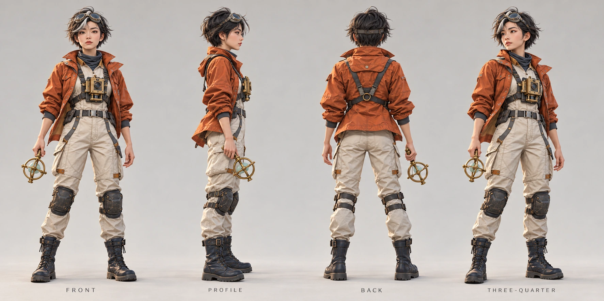
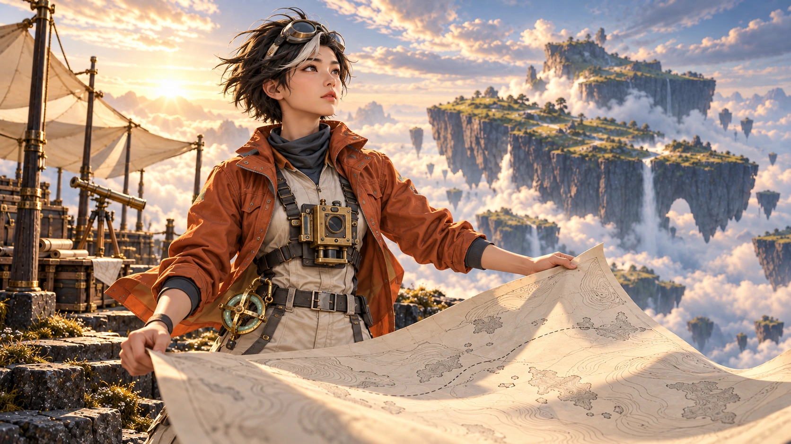

ORIGINAL CHARACTER / WORLD EXPLORATION
岚 · 云海测绘师LAN / SKY CARTOGRAPHER
在漂浮陆地之间，岚记录风向，也寻找尚未被画下的道路。她的装备来自一场漫长的旅途：风里磨旧的外套、可以折叠的测绘仪，以及始终朝向远方的目光。

02 /
从轮廓，到装备。
CHARACTER EXPLORATION
FORM / MATERIAL / FUNCTION
焦橙外套让角色在冷色云海中保持清晰，奶白连体服与深色护具建立轻重层次。布料折痕、黄铜磨损和紧凑的仪器结构，共同呈现一位常年在野外工作的测绘师。
03 /
风走过的地方。
WORLD / STORY KEYFRAMESDISTANCE / GESTURE / CONTINUITY
远景让人物成为云海中的一个坐标，近景则回到她与地图的关系。相同的帆布设施、拱形浮岛与晨光方向串起两个镜头；被风托起的纸面，把探索变成一个可以被看见的动作。
